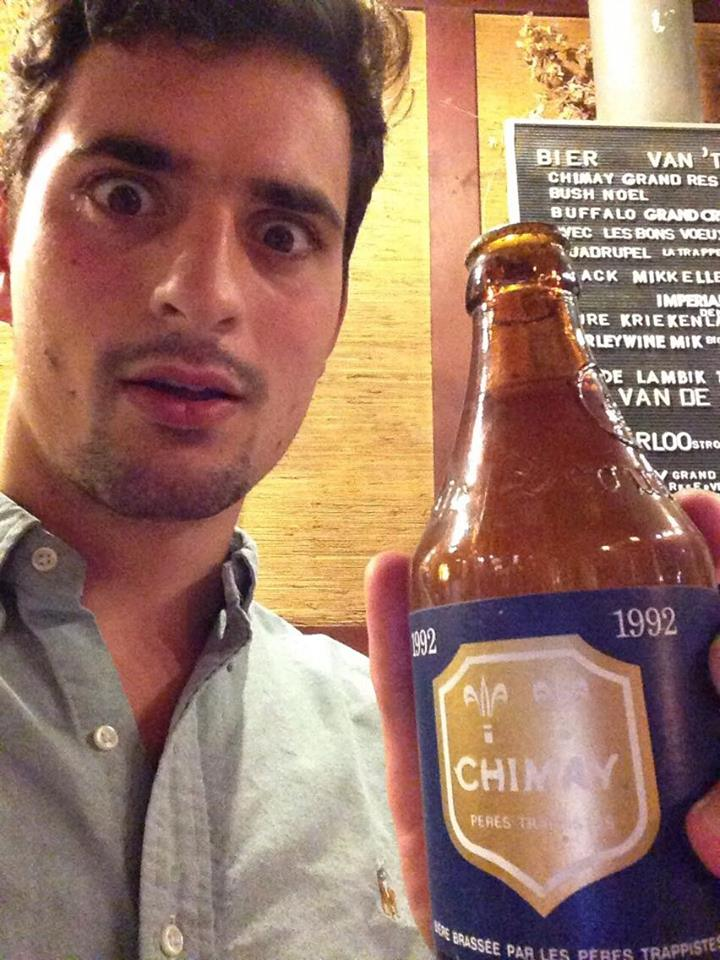

Editor Bios

Oliver Rex
- Favourite Brewery: I discovered beer in Scotland, so it's got to be Innis and Gunn. The original is a classic, and every time they add a twist it just works.
- Best and worst styles: Anything rich, strong and Belgian will do just fine. Fruit beers are the worst. In fact that's almost cheating because they are so profoundly far from the ideal of beer that they hardly qualify.
- Perfect Pint: At sunset in the Med, the beer cold and the weather hot. A nice view of the coast to round it off. Oh go on, throw in a mountain too.
- Premier League Footballer: Yaya Toure. Partly because I love my birthday too, but mainly because he's Kolo's brother so he can do what he wants.
- Celeb Drinking Buddy: Chris Pratt. Because obviously.
Kieran Pasco
- Favourite Brewery: Allagash, they have probably the best ubiquitous beer in supermarkets in their White, and their high end brews are mindbogglingly good.
- Best and Worst Styles: I'm a sucker for a Tripel or any Belgian strong ales. I find flavoured stouts/porters deeply offensive--with some exceptions.
- Perfect Pint: Overlooking a vast mountainous expanse while the snow falls. Sipping a thick, hearty beer from which I draw comfort and warmth.
- (Ex) Premier League Footballer: Kolo Toure. He lacks the inherent talent of his little bro, but more than makes up for it by playing his heart out and willfully disregarding his athletic limitations. He can produce masterclasses against the finest opposition with ease.
- Celeb Drinking Buddy: Chris Pratt, who do you think I am?
- Athlete Drinking Buddy: Joel Embiid, no question.